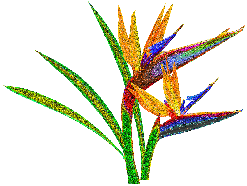
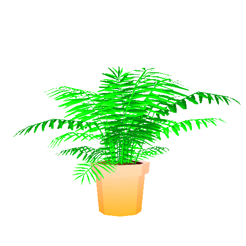
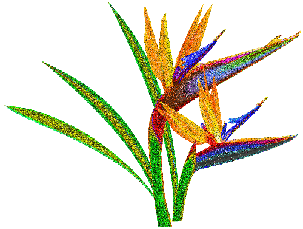
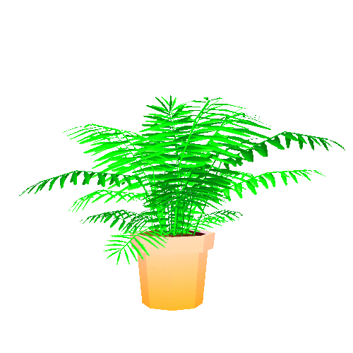

Drag me and other plants to seed

I like to think (and
the sooner the better!)
of a cybernetic meadow
where mammals and computers
live together in mutually
programming harmony
like pure water
touching clear sky.
I like to think
(right now, please!)
of a cybernetic forest
filled with pines and electronics
where deer stroll peacefully
past computers
as if they were flowers
with spinning blossoms.
I like to think
(it has to be!)
of a cybernetic ecology
where we are free of our labors
and joined back to nature,
returned to our mammal
brothers and sisters,
and all watched over
by machines of loving grace.

 


